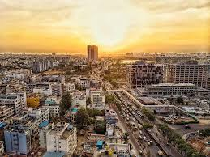
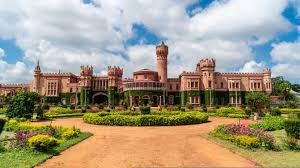

Bengaluru (Bangalore), the "Silicon Valley of India" and "Garden City," is a vibrant Karnataka metropolis fusing tech-driven modernity with lush green spaces. Visitors can enjoy a pleasant climate, explore scenic parks like Lalbagh and Cubbon Park, or explore historical sites such as the 19th-century Bangalore Palace and the neo-Dravidian legislative building, Vidhana Soudha.
Known as a melting pot of cultures, Bangalore offers a diverse experience from bustling markets at K.R. Market to a thriving cafe and pub culture. It’s a culinary paradise for food lovers, offering both South Indian traditions and modern cuisine, alongside popular attractions like the ISKCON temple and Commercial Street for shopping, ensuring a unique mix of tradition and innovation